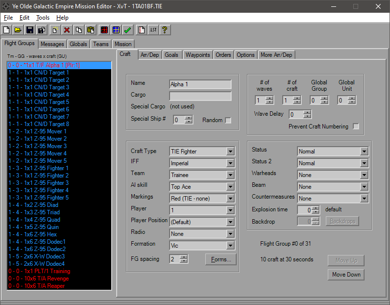
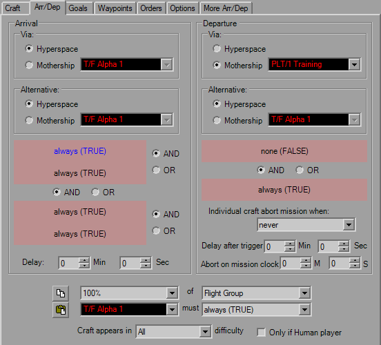
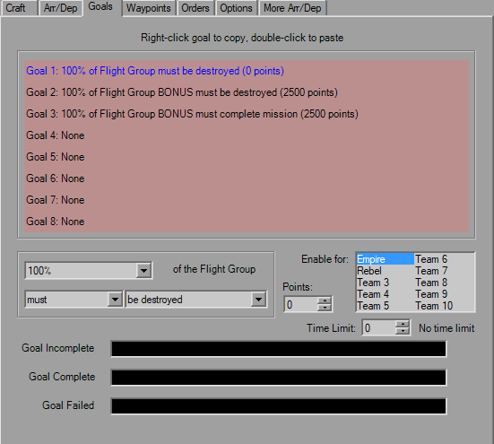
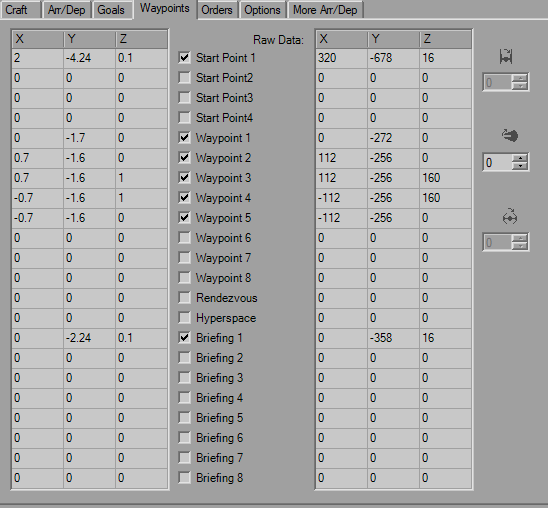
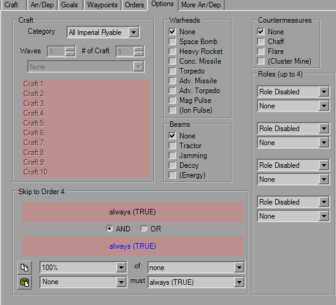
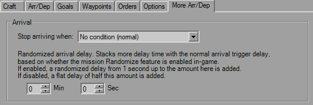

Flightgroups

This page includes most of the basic information for the given FlightGroup. On the left you have the list of FGs with a briefing summary of their details. On the right you have several tabs to help find the settings you wish to edit. But for right now we're going to focus on here.
The ListBox on the left shows every single FG in the mission and is accessible from every FG tab. There is a maximum of 46 FlightGroups allowed in a mission file. Past that results in various corruptions. YOGEME will enforce this limit.
The ListBox gives you the Team Index (as well as the appropriate IFF color), Global Group, Number of Waves x Number of Craft, FG Name and Global Unit. The FG with an asterisk is the player's FG. Simply click on a FG to load that craft's settings.
Multiselect is now available as of v1.12. The details of the top-selected item will be shown and changes will be sent to all.
The first group includes the craft Name and Cargos. These strings all have a maximum length of 20 that is enforced. For Special Cargo to be activated, either the Random checkbox must be checked or Special Ship# must be non-zero. Special Cargo replaces the normal Cargo for the indicated (or random) craft in the FG. This will also mark the craft as "Special" for use in triggers and goals.
The next group has several settings, from ship type, weapons, formation, etc. For the Craft Type, if you wish to use a custom shipilst, say for a conversion mod or you've replaced ship models, you can take the supplied "xvt_shiplist_template.txt" file and remove the "_template" from the name and change the contents as you see fit. YOGEME will automatically detect and attempt to load the non-template file. It is important to note that the number of entries must match the original count and that each line is the form "Full Craft Name,Abbrv". This will not affect in-game content, this is merely display within YOGEME.
IFF will determine which color it appears as in the CMD, while Team determines allegiance and who the ship blongs to. Note that this has little meaning to the AI. If you give an order to attack a ship on the same Team, an AI craft will attack and doesn't care.
For the Player value, use zero for AI controlled. The AI skill value controls how smart the FG is. Veteran is usually a good value for an average ship. Markings will change the highlight markings for craft that support it, which usually means Fighters.
Formations are the layout of the FG. If you know what you want you can select it from the dropdown, or click the button to take you to the Formations Dialog. FG Spacing controls how spread out the gorup is. Default value is 2, and I haven't found a consistent unit of measure for this value although it's probably related to ship class.
The Radio is used to detemrine if FlightGroups will listen to orders given by the player and will also give various status messages udring the mission.
The third group is the numbers box. # of Waves is how many times the group will spawn, minimum of 1. If you never want it to show up, use Arr/Dep controls. # of Craft controls how many ships spawn at a single time, maximum of 6 as the formations can begin to corrupt above that.
Global Group allows grouping of multiple FGs for use in goals or triggers. Standard uses are for grouping strike craft, capital ships, mission-critical craft, convoys, etc. You can deal without most of the time, but you may burn all triggers or not have enough if you've got too many FGs separated out. Global Unit is another grouping mechanic, this allow the sharing of FG Numbers. In the image above, the containers and fighters are all named with numbers individually, although assigning them the same name and using a GU would provide the same result.
The final group has the Status parameters which lets you disable the hyperdrive, cut shields, or a few other adjustments. Warheads, Beam weapon and Countermeasures are also defined here.
The Explosion time field acts strange, I don't mess with it normally. For Backdrops, the last fields activate and let you choose the image via the index or Backdrops Dialog.
The last item of note for this tab is the "Flight Group # of #" string which is good for letting you know how close you are to the limit, as well is the "# Craft at 30 Seconds" string. This value will turn red if more than 32 craft will be present at the start of the mission or have simple Arrival delays that have the FG showing up within 30 seconds. This is your quick sanity check for the craft limit, it's up to you to ensure that this isn't exceeded for the rest of the mission. Any craft over 32 will not appear, this can break missions when those missing craft are mission-critical for destruction goals and others.
When the CraftType is changed to "Planet" the Craft tab changes to reflect the fields that apply. The remaining fields don't have any tricks to them; the Backdrop field is the numerical index of the image. Click the "Backdrop" button to open the Backdrop Dialog.

The Arrival and Departures tab controls when, how and if the FG shows up during the mission. The Arrival and Departure panels hold the settings for those events as one would expect. When you click on a trigger (red background) it gets loaded into the drop boxes below for editing. The two buttons next to the drop boxes should be pretty obvious that they're Copy and Paste buttons. These apply to the trigger itself. The trigger can be pasted into any trigger in the mission, likewise any trigger copied elsewhere can be pasted here. The final drop box at the bottom controls which mission difficulty setting is required at launch for the FG to show up as well as a checkbox to force craft ot he player-controlled (for when multiple player FGs are defined or MP missions). Handy for throwing in extra ships for Hard or removing ships in Easy.
The Mothership settings should be straight forward, craft will default to Hyperspace. You can select any FG in the mission to be a Mothership, even if they aren't equipped with a hangar. Forgetting to reassign the Mothership's FG can lead to amusing instances of large craft leaving the "hangar" of the first FG, which is usually the player, sending them tumbling, sometimes into tiny pieces.
FlightGroups will attempt the the first option (Via panel) when the appropriate trigger fires and will go to the Alternate when the primary Mothership is not in theater. If both condtions cannot be met, the FG will hang around either holding still or sometimes flying in a straight line forever, depending on their last order.
The Arrival Delay doesn't have any tricks to it; if there's a trigger set it will delay after that firing, if there's no triggers (both TRUE) it will delay from the mission start. For Departure there are two, the Delay is based on the Trigger while the Abort time is based on the clock. The entire FG will leave when the departure trigger and delay is met, or when the abort time is met, whichever comes first. Also, individual craft will leave when the Abort condition is met, such as "Warheads Depleted" or "50% Hull".

This is a rather simple tab, it lists the Flightgroup-specific goals. Changing the argument ("must" in the image) will control if the goal is a Primary, Prevent ("must NOT") or Secondary ("BONUS *") goal. For the goal to be applied, the appropriate team mus tbe selected. Traditionally the goal will always be applied to Team 1, unless you're making a multiplayer mission. The Points field is the number of points awarded or subtracted when the Bonus goal is completed. This can be negative, which is handy for a "you suck" type of condition where you don't want to neccessarily cause a mission failure.
There's also a time limit that can be applied to the goal, as well as three strings at your disposal for the in-flight goal list.

Waypoints are the 3D grid coordinates which control initial placement, briefing layout among others. The left field will likely be the primary field of interest, as that one is in kilometers (klicks) which is what is used in-game. The right field is the raw data that is stored in the file, for when you're picky and you need to try and squeeze out a couple extra meters you lose from rounding. Each raw unit is 6.25 meters.
The checkboxes control whether or not the WPs are important. If you have multiple Start Points, theroretically it picks one at random (I say this as normally I only notice it using SP1). The Waypoints are used for craft with various "Patrol" or "Circle" orders, best used with capital ships or convoys that can't fly in a straight line. The Rendezvous WP as far as I can tell is only used for the Rendezvous order. Hyperspace defines where the ship hypes in to and where it heads when it's hyping out. When a craft arrives via hyperspace, it will be oriented such that it will pass through HYP and be pointing towards SP1, even if SP1 isn't checked. This is important, so remember to set SP1 for craft with HYP otherwise you can have collisions when multiple craft hyper in at the same time. Craft leaving have no orientation, then hype out when they hit that point.
The Briefing points uses only the X and Y coordinates and is used for the pre-mission briefing animation, one for each posible Team's briefing.
The rotation fields with the T/I icons are mostly disabled with the exception of Pitch. If you're used to using different editors and adjusting the pitch angle, you know normally this value is 64 to counter the automatic nose-down that the flight engine automatically adds to all craft. That is the raw value. YOGEME displays this number corrected degrees, so what you see as 64 in other editors will appears as 0 in YOGEME. Sometimes the conversion from 256 to 360 isn't perfect and it may slip a degree (44° will be 43°, but 45° will always be 45°). YOGEME is aware of that extra 90° and it will be added back into whatever value you choose. (Yes, this means if you put 64 here, the ship will pitch up about 64° instead of being "level")

Orders make the world go 'round. XvT gives you four orders to control FG behaviour, with up to four targets for each. The top drop-down gives you the Order itself. The Copy and Paste buttons are for the individual order with all targets and settings. Changing the order will update the short description (shown as "Attack targets (not for starships)") and variable definitions (shown as "Component?" and "Meaningless"). Pay attention to the description, as it can give you hints about what that order is suited for. In the picture above, the normal "Attack targets" order is meant for fighters, not capital ships. Caps should use a "Patrol" variant and fly through their waypoints. Using fighter orders makes them spin on a dime and looks stupid. I will mock you if you do this.
Throttle % is just that, a very basic throttle control, while Speed gives you a more precise number suited well for convoy craft of differeing ship types. The two variables next to it change meaning as you select orders, so pay attention and play with them to get a full understanding.
Targets behave similarly to triggers, using the Type and Variable fields as well as the And/Or controls. FlightGroups will go after Primary targets first, with Secondaries being saved for afterwards or as targets of opportunity. The order text will update to reflect any changes and ensure the result is what you're looking for.
The Handicap field needs more testing, but seems like the intention was to provide a "preference" to the targets, to guide them to certain targets wtihout removing them from the list of potential targets.

This tab lets you set a bunch of miscellaneous settings for the FG, most of them pertaining to loadouts available to select at the start of the mission while you're sitting in the hangar. Use the Craft Category to set a bunch of flyable craft, or make a custom set. There's a bunch of weapon options to play with, too.
Roles primarily are for message updates, such as "Your Command Ship is under attack!" etc. They can also be used for orders and goals, however. Each role can independently asigned to a team.
XvT also provides a Skip trigger to jump to the last order. This adds a small dose of dynamics to the mission.

The Unknowns tab has been replaced with "More Arr/Dep", which has a few extra fields that cannot fit on the original Arr/Dep tab. These aren't used very often, and have descriptions shown. The Stop arriving when field stops the condition of say a FG wave with simple Attack orders arriving, targets already destroyed so they leave, next wave arrives, repeat.